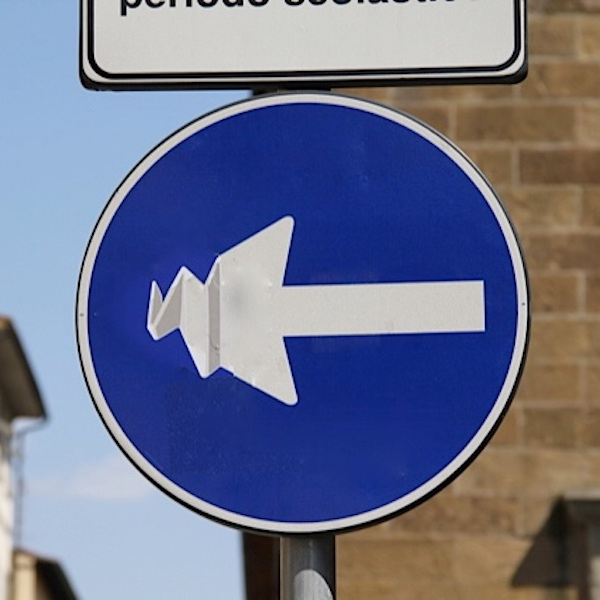

Photo by Francesca Tosolini
One summer day, I was happily walking on the streets of Florence with my son Alessio, who was 10 at that time, when he suddenly yelled "Mom, look!", while pointing at the same time to a no-entry road sign on which someone had drawn a black pooping pigeon. We laughed, took a photo and moved on, thinking it was a funny joke. However, a few minutes later we saw another sign that had been modified, and then another one, and another one. At that point, our simple tourist walk became an exciting treasure hunt and, at the end of the day, we were able to find more than twenty crazy, hilarious and creative road signs. I later learned that they all come from the artistic mind of Clet Abraham, a French artist who has been living in Italy for the past twenty years. The next time you go to Florence, look around and, I can assure you, you will have a lot of fun, with or without kids! {On chapter 2 “Driving in Italy” of the eBook “Italy from the Inside. A native Italian reveals the secrets of traveling in Italy” you can see many more signs by French artist Clet Abraham}